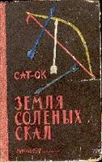
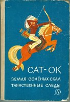
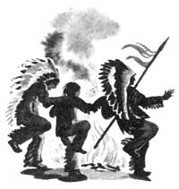

Сат-Ок. Земля Соленых Скал
"Земля Соленых Скал" - автобиографическая повесть ***, написанная
Сат-Оком, сыном вождя индейского племени шеванезов и польской
революционерки.
О ЗЕМЛЕ СОЛЕНЫХ СКАЛ И ДОРОГЕ ГОРЬКИХ СЛЕЗ
"... В повести "Земля Соленых Скал" питомец племени шеванезов, сын
свободолюбивой польки Белой Тучки и непреклонного вождя Высокого Орла,
сумел с потрясающей правдивостью и суровой поэзией рассказать о
неравной борьбе своих непокорных соплеменников против вооруженных
поработителей..."
Лев Кассиль
Глава I
Томагавк Непемуса наносит удары невидимым врагам. Рука у воина
верная, его мышцы тверды, как медвежьи клыки. Каждый удар томагавка -
это Песня Смерти для врага. Все выше взлетает песнь воинов:
Маниту, Маниту,
Дай им силу медведя.
Чтоб были отважны, как волк разъяренный,
Чтоб мужество взяли у брата рыси...
Сегодня День Удаления - праздник вступления маленьких мальчиков в
школу природы.
...
Пять раз скрещивались копья, и столько же раз Непемус отступал.
Это означало, что мальчику, за которым он пришел, исполнилось пять лет
и для него настало время начать жизнь среди воинов, учиться их
мудрости, познавать законы племени и чащи.
...
Приближался рассвет. Селение молчало. Наши сборы были недолгими.
В несколько минут мы приготовили снеговые лыжи, набросили на плечи
кожаные накидки. И... это все.
Выходя из селения, я еще раз посмотрел на типи родителей. Из-за
шкуры у входа выглянули две головы. Я поднял руку в знак прощания...
С этого мгновения я уже не был ребенком. Я становился
Мугикоонс-Сит - Молодым Волком.
...
Глава II
- Ути из рода Совы! Ты оскорбил меня, не поверив моим словам.
Пусть твои уши хорошо слушают, что скажет тебе сын Высокого Орла.
Он поднял руку в знак того, что внимательно слушает.
- В присутствии этих Молодых Волков, - продолжал я, - я буду
драться с тобой. Если я тебя одолею, ты извинишься передо мной.
Он снова поднял руку в знак согласия.
Один из мальчиков побежал за медвежьим жиром, мы же разделись до
пояса, готовясь к борьбе. Мороз был такой, что от каждого шага
раздавался треск, будто мы ступали по сухому хворосту. Я еще не
согрелся после вынужденного купания и был уверен, что кровь моя
превратилась в лед. Минуты тянулись бесконечно, как зимняя ночь во
время похода.
...
А я пою в душе песню о том, что буду когда-нибудь, как Непемус, и
лицо у меня будет такое же суровое и отмеченное шрамами от медвежьих
когтей. Как Непемус, я буду бороться врукопашную с серым медведем и
выйду победителем. Это будет прекрасная борьба. Против меня станет
большой серый медведь, свирепый, с большими клыками и когтями, а у
меня будут мое мужество и мой нож. Лезвие ножа слабее любого из
медвежьих когтей. Лезвие ножа можно сломать даже о ветку дерева, а
медведь своими когтями может разломать и скалу. Но я одолею его и
поставлю ему ногу на горло. Я возьму себе его имя, и меня уже будут
называть не ути, мальчик без имени, а Серым Медведем, Длинным Клыком
или Острым Когтем.
...
Глава III
В знак союза я порезал себе руку, и красная капля крови упала в
спокойное течение. А потом я прыгнул в серебряную глубину. В эту
минуту я был уже не человеком, а рыбой, ближайшим союзником и другом
Духа воды. Я разгребаю руками холодную воду, плыву по течению, потом
против течения, потом внезапным броском, как рыба, испуганная тенью
большой птицы, кидаюсь вглубь, чтобы столкнуться с поросшей
водорослями скалой. Когда я отталкиваюсь от дна, проплывающие надо
мной рыбы светятся, будто светлячки в чаще, только свет рыб тусклый и
таинственный, хоть и доброжелательный, как и весь мир моего нового
союзника - Духа вод.
...
- Ты ведешь себя, как дикобраз, который идет куда смотрят его
глаза, а головой не думает. Глаза твои слепы, как у щенка, а в твоей
голове живут белки.
Брат бранился так тихо, что я едва его слышал.
- Как ты мог выйти из-за камня, когда луна как раз в ту минуту
хотела осмотреть мир? Женщиной ты будешь, а не воином!
...
Глава IV
И вот слышится над чащей крик возвращающихся гусей. Брат мокве -
медведь вылезает из зимней берлоги. Медведица выводит малышей на
теплый солнечный свет. Братья бобры высовывают круглые головы над
водой у своих плотин.
Молодые Волки начинают учиться ездить верхом и строить лодки.
Быстрое весеннее течение несет березовое каноэ, как ветер. Потом река
успокаивается - уже лето. Мы плывем на мелководье, где греются на
горячем летнем солнце жирные щуки.
...
Овасес, Сломанный Нож или Большое Крыло рассказывали о старых
временах, о боях и войнах между племенами. И после этого мы вели войны
между собой, заимствуя из событий прошлого все то, о чем охотно
рассказывали старики. Мы обычно делились на два лагеря из одних ути -
мальчиков без имени. Каждый из нас разрисовывал себе лицо и грудь
военными красками и как воин, вступающий на тропу войны, натирал свое
тело жиром для защиты от насекомых. Старшие мальчики посмеивались над
нами, поэтому мы охотно с согласия Овасеса убегали из лагеря на
несколько дней в лес, чтобы вести свои стычки и войны "между
племенами".
...
- Я Желтый Мокасин. Меня прислал сюда Высокий Орел, чтобы я
отыскал его младшего сына.
Сердце у меня сильно забилось. Я вышел из круга мальчиков и,
подняв руку вверх, воскликнул:
- Я ути, сын Высокого Орла. С чем прислал мой отец великого воина
Желтого Мокасина?
Я был маленьким мальчиком, но мои слова, наверное, понравились
прибывшему. Он улыбнулся и слегка наклонился ко мне.
- Желтый Мокасин, не жалея своего коня, мчался к лагерю Молодых
Волков весь день и всю ночь, чтобы передать сыну Высокого Орла
отцовский подарок.
И тут, в этот счастливый миг, он бросил повод коня мне в руки!
Это был мой конь! Мой первый конь!
...
Брат быстро понял, кто нас опередил. Держа меня за руку, он начал
отступать. Но как раз в этот момент и я заметил около невысокого дуба
бурого медведя с сотами в лапах.
И по сей день я со стыдом вспоминаю, что я потерял тогда
рассудок, забыл осторожность и, вырвав свою руку из руки Танто,
бросился бежать вслепую. Испуганные глаза плохо видят. Я споткнулся о
сухой корень и растянулся во весь рост со страшным криком. За спиной я
услышал короткое злое рычание медведя. Это был враг людей -
медведь-отшельник, уже и так раздраженный пчелами.
...
Глава V
- Я знал, что ты придешь, - повторил он и умолк, будто бы ожидая
моих слов.
Я пересилил себя и прошептал:
- Мой Тауга, мой Тауга...
- Знаю! - Горькая Ягода выпрямился надо мной, страшный и
огромный. - Знаю, твой Тауга болен.
Я снова расплакался.
- Отец, - промолвил я, - отец... Не допусти, отец, чтобы вечный
мрак окутал его.
- Иди в свой шатер и жди меня. Я отгоню от него Духа смерти.
...
Наступила великая тишина. Только далекое эхо донесло до нас
гудение барабана. Никто не смел шевельнуться, никто не смел даже
вздохнуть. Казалось, что и красные языки пламени замерли неподвижно. А
когда пронзительный свист рожка вновь прервал тишину и вновь ожили
бубны, колдун поднялся, повернулся лицом к луне и вскинул вверх руки с
криком:
- Сат-Ок!
- Са-а-ат-О-о-ок! Са-ат-О-ок!
Все повторили крик колдуна.
Это имя впервые пронеслось над селением, поляной, рекой и лесом.
Колдун закружился в последний раз. А потом подбежал ко мне,
схватил меня за руку и вытащил на середину круга.
- Сат-Ок! Сат-Ок! Сат-Ок! - все быстрее кричали воины, все
пронзительнее свистели рожки, все громче били бубны.
Меня охватила радость и гордость - великий колдун Горькая Ягода
своим танцем рассказал всему селению историю моей победы над орлом и
дал мне имя. Отныне меня звали Сат-Ок - Длинное Перо. Уже никто не
назовет меня ути - малыш.
У меня есть имя!
И я начал плясать танец победы и радости.
И только когда у меня остановилось дыхание, когда после одного из
прыжков я упал на колено и мне тяжело было подняться, а кто-то
наклонился надо мной и помог мне встать, - только тогда я увидел, что
в кругу воинов, впервые выкликавших мое имя, находился Высокий Орел,
мой отец, внук великого Текумсе.
...
Глава VI
- Слушайте внимательно мои слова, Молодые Волки. В нашу чащу, в
наши прерии пришел белый человек со своими воинами. Чужой человек
хочет отобрать у нас лес и равнины и хочет, чтобы мы пошли в такой
лес, который называется резервацией и откуда нельзя выйти, как из
западни. Но наше племя - свободное племя шеванезов и таким останется.
Белых слишком много, чтобы с ними бороться. Они имеют такую силу,
какой у нас нет. У них есть такое оружие, какого у нас не знают. Но мы
должны их задержать и запутать свои следы. Вы вернетесь к главному
лагерю и вместе с женщинами и детьми пойдете к Земле Соленых Скал. Вас
поведет Овасес. Воины останутся со мной. Вы выступите перед рассветом.
Я кончил.
Мы, подростки, немногое поняли из слов отца. Мы впервые услышали,
что существует лес, где невозможно жить, лес - западня, а не дом
свободных племен. Мы этого не понимали, не знали, что это значит, - ни
Сова, ни я, ни другие мальчики.
...
Глава VII
Тогда по знаку отца был зажжен Большой Костер. Яркое пламя быстро
взвилось вверх и осветило обнаженные до пояса фигуры воинов,
заблестело на лезвиях ножей и томагавков, отразилось в глазах. У
костра стал отец. Его султан из перьев, почти касаясь земли,
покачивался. На висках блестели тонко отточенные рога бизона. Грудь,
раскрашенная поперечными желтыми и красными полосами, пламенела, как
огонь. Он снова поднял руку, и на этот знак отозвались бубны, рожки,
сопилки. Их медленный сначала ритм вовлекал воинов в широкий круг.
Начинался военный танец.
Вот воины выступают в поход, идя долгим и далеким маршем, вот они
подкрадываются к лагерю врагов, вот притаились, натягивают луки,
держат наготове копья и томагавки. Потом все замирают в ожидании
приказа вождя, а когда над долиной проносится страшный военный клич,
бубны, рожкя и сопилки звучат в бешеном ритме, а воины бросаются в
атаку, и начинается бой. Боевой клич тревожит покой звезд и
раскатывается сильнее грома между скалистыми стенами долины.
Из группы женщин выходит старейшая женщина племени и заводит
военную песню, прославляя в ней отвагу и подвиги своих сыновей. После
каждой строфы песни круг танцующих воинов, куда уже протиснулись даже
мы, мальчики, задерживается, и все мы возносим вверх руки и трижды
кричим:
- О Маниту! Тингав-сусима! Тингав-сусима! Тингав-сусима! О
Маниту! Помоги победить! Помоги победить! Помоги победить!
...
Очень красивой была моя мать, жена знаменитого вождя племени
шеванезов. Светловолосая и светлокожая - ведь звали ее Белой Тучкой, -
высокая и стройная в своем платье из тонкой оленьей кожи, богато
вышитом знаками и цветами племени, с золотыми браслетами на украшенных
бахромой рукавах.
Она смеялась и звала меня по имени. Я впервые услышал свое
мужское имя, произнесенное устами матери:
- Сат-Ок! Я знала, что ты придешь, Сат-Ок!
...
А Тинглит действительно вошла. Она была, как мать и Тинагет,
празднично одета в платье из тонкой оленьей кожи, расшитое блестящими
цветными бусами. В косы она вплела яркие лесные цветы, на лоб надела
повязку из белого конского волоса.
И хотя она нарушила все мои планы, хотя по одному взгляду брата я
понял, что Танто уже для меня потерян, я не мог на нее сердиться. Я
сразу вспомнил Прекрасную. Тинглит была, как молодая весна.
Мой взгляд, должно быть, был слишком уж красноречивым, так как
Тинагет не выдержала и фыркнула:
- Сат-Ок, братишка, ты смотришь на Тинглит, как медведь на
медовые соты.
Меня охватил стыд и гнев, потому что даже отец громко рассмеялся.
- Сат-Ок, Сат-Ок, - смеялся он, - берегись! К такому меду
прилипнуть легко, но оторваться трудно даже воину.
От стыда я забыл о всякой осторожности.
- Мне это не страшно! - крикнул я, показывая на Танто. - Не ко
мне приклеится Березовый Листок! Не обо мне расспрашивают красивые
девушки!
...
- Убил человека?
- Да. Ты слышал, что отец меня сегодня похвалил. Большое Крыло и
Сломанный Нож тоже хвалили меня за то, что тот белый не успел даже
крикнуть. Я взял его оружие. Я знал, что делаю это для защиты свободы
племени, чтобы не загнали нас в резервацию, где будут умирать женщины
и дети, а голод вырвет луки из рук воинов. Я ненавидел того человека
из Королевской Конной. Но сердце мое неспокойно. Нехорошо убивать
человека, даже когда это враг.
...
Глава VIII
До Пещеры Безмолвных Воинов было уже недалеко.
Но нужно было переждать тут целую ночь: посещать мертвых можно
было только на рассвете.
...
Стены пещеры испещрены рисунками, изображающими историю племени,
историю великих и славных событий, борьбы, охот, походов. Каждый из
рисунков - это один день жизни шеванезов. Но эти знаки, как и давно
умершие воины, перестали говорить с нами. Их язык давно утерян. На
протяжении многих веков, во время жестокой борьбы с белыми, вожди и
колдуны погибали так быстро, что не успевали научить языку знаков
своих преемников, своих сыновей. И теперь никто из племени не может их
прочесть. Даже Горькая Ягода и отец знают лишь некоторые из них.
Неужели и мы умолкнем, и сын моего сына не сможет прочесть
знаков, которыми я попрощаюсь здесь со своим отцом?
...
Глава IX
Утром лагерь выглядел, как лесная поляна, пестрая и яркая от
разноцветных типи. Посреди лагеря на просторном месте возвышался
большой шатер, окрашенный в красный цвет, с тотемными знаками всех
наших родов. Это шасса-типи, в нем совершается испытание крови.
...
Но вот воспоминания проясняются. Я вижу, как Танто быстрыми,
мелкими шагами подбегает к столбу. Вижу, как оба юноши на какое-то
время неподвижно замирают, чтобы затем внезапным прыжком назад
разорвать узы, связывающие их с тотемным столбом. Тонкие ремешки
разрывают кожу у них на груди. Кровь течет широким ручьем. С грохотом
отрываются от ног медвежьи черепа, а шум трещоток становится таким
сильным, что я не слышу собственных мыслей. Наконец Горькая Ягода
поднимает руку, и в шатре повисает тишина. Танто и Паипушиу выбегают
из шатра, я слышу их трехкратный клич - крик орла-победителя. Они уже
мужчины. Перед ними теперь только дорога воинов и охотников, дорога
мужчин и стариков и, наконец... Дорога Солнца.
...
Глава X
Наступила осень - индейское лето, пора большой охоты. Леса
сменили окраску, пожелтели, покраснели. Сильное дыхание кей-вей-кеена
срывало листья с веток. Маленькие пауки начали путешествовать по лесу
на своих серебряных нитях. Все чаще среди древесных стволов
разносилось эхо призывного клича волчьих стай. На лесных тропинках
шелестела под ногами сухая листва. Воины говорили: "Сестра
кей-вей-кеена зима - унатис ткет для матери-земли покрывало с цветными
узорами. Мать не замерзнет под снегом".
...
Больше я ждать не мог.
- Великий Дух, помоги мне! - прошептал я и выскочил на тропинку.
Лось стоял между мной и перепутавшимися деревьями. Дорога к озеру
была открыта для него, но там уже ждал Сова с копьем в руках. Чтобы
отступить, лосю нужно было сделать почти полный поворот.
Выскакивая из-за ствола, я предупредил лося окриком - так велит
охотничий обычай. Лось вздрогнул, напрягся для прыжка, но успел
сделать лишь пол-оборота - в это мгновение в его бок глубоко вонзилась
стрела из моего лука. В последний раз мы услышали его рев, в нем
дрожала боль и мука последних минут.
...
Глава XI
Но тут прозвучал голос отца, громкий и грозный:
- Молчи, Вап-нап-ао! Ты уже сказал свое слово. Теперь буду
говорить я, вождь свободных шеванезов.
Все повернулись к отцу. Он вынул из-за пояса нож, протянул перед
собою левую руку и надрезал ее у ладони.
Кровь потекла тонкой струйкой и начала впитываться в землю. Отец
сказал:
- Я, Высокий Орел, вождь свободного племени шеванезов, еще раз
заключаю братство крови с моей землей и говорю: только смерть может
разлучить меня с нею.
...
Глава XII
Медведь все еще не слышал нас.
Наконец Танто, натянув лук, крикнул:
- Мокве, брат мой, оглянись!
Медведь медленно, будто не доверяя своему слуху, повернулся к
нам. Тогда свистнула стрела Танто и впилась в глаз большого зверя. По
чаще разнесся оглушительный рев. Моя стрела попала в раскрытую пасть.
Медведь бежал прямо на нас. Мы отскочили в обе стороны, и он
приостановился на мгновение, выбирая противника. Он выбрал большего,
Танто, который размахивал курткой. Медведь поднялся на задние лапы, и
в этот миг брат бросил ему в глаза пригоршню соли и накинул на голову
кожаную куртку.
...
Глава XIII
- Может быть, и не умер Сломанный Нож. Но я хотел бы, отец мой
Овасес, чтобы лучше твоя стрела пробила мое сердце, чем белые связали
мне руки и приложили мой тотемный знак к говорящей бумаге.
- Сломанный Нож не умер. Он жив и он воин! - повторил сурово
Овасес.
- Так, значит, это белые приложили к говорящей бумаге знак
Сломанного Ножа? - спросил тогда Горькая Ягода.
- Да.
Горькая Ягода положил руку на плечо больного.
- В этом шатре женщины не будут петь песен над умершим.
Приветствуйте своего мужа и сына, - обратился он к женщинам, - через
два дня его будет приветствовать совет старейших племени, где воин
Сломанный Нож расскажет, какие дороги он прошел, прежде чем
возвратиться к нам.
Глава XIV
Миновали времена Великого Текумсе. Да и тогда уже шеванезы были
слишком слабы, чтобы бороться с белыми. Теперь же нам осталась только
ловкость оленя, убегающего от голодных волков. Но если Овасес, Желтый
Мокасин и Маленький Филин пройдут под Скалой Орлов, имена их на долгие
годы останутся в памяти шеванезов. Женщины будут петь о них песни,
учителя будут рассказывать об их подвигах Молодым Волкам...
...
Внезапно на самом перевале поднялась белая тучка. Сначала это
было маленькое облачко, не больше ладони, но и такое оно сразу закрыло
три маленькие фигурки, а потом начало расти, опускаясь вниз. В воздухе
задрожал глухой отзвук, как далекое эхо бури.
Сколько это продолжалось? Мгновение или вечность? Белая тучка
лавины двигалась в долину, расплывалась по склону, как река смерти.
Глава XV
- Отец мой Овасес, - повторял Танто, - выслушай своих сыновей!
Зовут тебя Танто и Сат-Ок из племени шеванезов, из рода Совы. Ты сам
дал нам имена, сам забрал нас из рук матери и вел сквозь чащу и горы.
Ты следил за нашими шагами и учил своей мудрости. Теперь мы приходим к
тебе, отец наш Овасес. Помоги нам пройти через Скалу Орлов, направь
наши шаги, отгони злых духов. Мы идем по твоим следам, чтобы спасти
племя шеванезов. Помоги нам, отец наш Овасес!
"...Овасес!" - отвечал далекий голос.
Глава XVI
Белые лежали, как бревна. Как бесчувственные, безмозглые бревна.
Только один что-то забормотал сквозь сон, когда мы связывали ему руки.
Остальные даже не пошевелились. И они назывались воинами, эти люди!
Люди, которые обрекали на смерть, на голод и неволю племя свободных
шеванезов! Как я их презирал! В моем сердце не осталось места даже для
ненависти. Они были сильными, могучими и одновременно такими смешными
и слабыми. Они имели оружие, которое разбивало даже скалы, но они не
могли противиться духу огненной воды.
Благодаря своей хитрости они завладели всей нашей землей, но
установили такие законы, при которых человек, чтобы накормить
собственных детей, должен обрекать на голод чужих детей. Они были сто
крат богаче красных народов, а не умели обеспечить достатком стариков
своих собственных племен. Умели быть храбрыми, как Вап-нап-ао, и
применяли свою храбрость не в бою воина с воином, а для того, чтобы
мучить голодом женщин, стариков и детей. Умели быть благородными, как
Купец, но свое благородство обменивали на... браслеты из желтого
железа.
...
Глава XVII
Танто бросился вперед, как рысь. Мы выбежали на склон. На
расстоянии одного полета стрелы от нас мы увидели белого человека -
человека в красной рубашке из Королевской Конной.
Он как безумный убегал от огромного черного медведя. Страх лишил
белого остатка разума: он бежал вверх - медведи же медленнее бегут
вниз.
Внизу стояли и спасительные деревья, правда, до них он все равно
не успел бы добежать. Но ведь вверху для него вообще не было никакого
спасения. Никакого - кроме... нас.
...
Перевод с польского Ю. Стадниченко
Издательство "ДЕТСКАЯ ЛИТЕРАТУРА", Москва - 1964
OCR: Андрей из Архангельска (emercom@dvinaland.ru)
Скачать одним файлом - Sat-Ok.txt.zip
 
*** Эта Книга и правда не обычная. В ней много того, что волнует
мою душу. Поэтому она здесь. События описаны коротко, но красочно,
по-настоящему, по-индейски :) Я тут в содержание вынес избранные
отрывки из каждой главы, и не скажу, что они самые интересные и
лучшие, потому что в книге все интересно и все сильно!
Сат-Ок написал еще несколько книг "Таинственные следы",
"Белый Мустанг", "Тайна старого сагоморы". Их я пока не нашёл и
не прочитал. Еще есть книга Внукова В. "Слушайте Песню Перьев",
она про путь Сат-Ока в Польше, во время войны. Читаю :)
Сат-Ок - настоящий индеец, настоящий воин. Таких сейчас мало...
А мы белые, белые по сути... Но очень хочется это изменить :)
Лёха Орочон
Март 2009

|